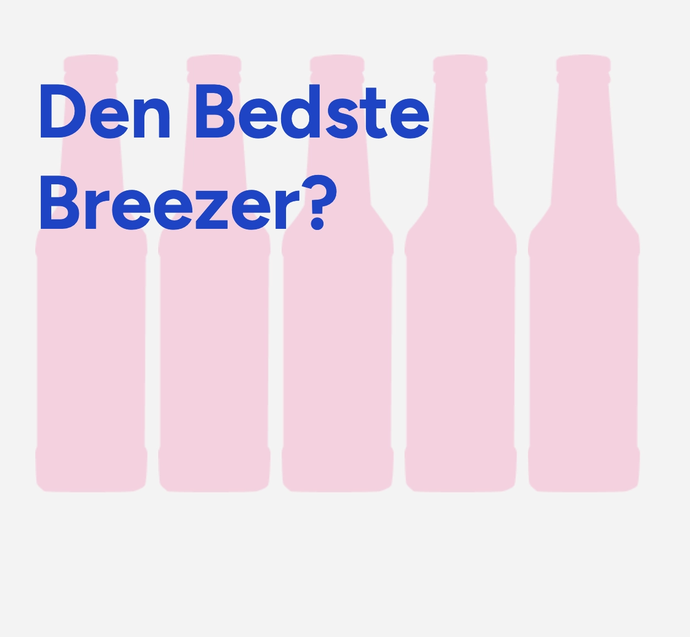
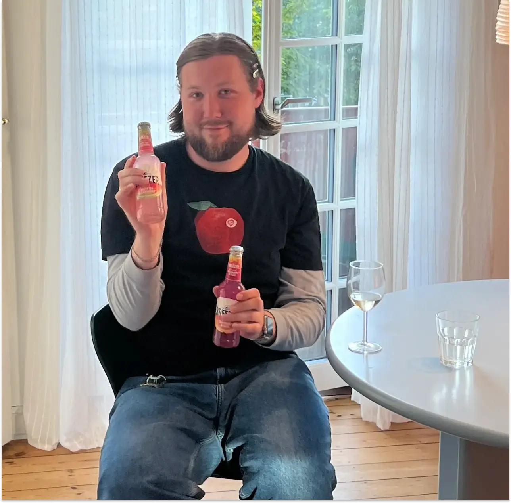
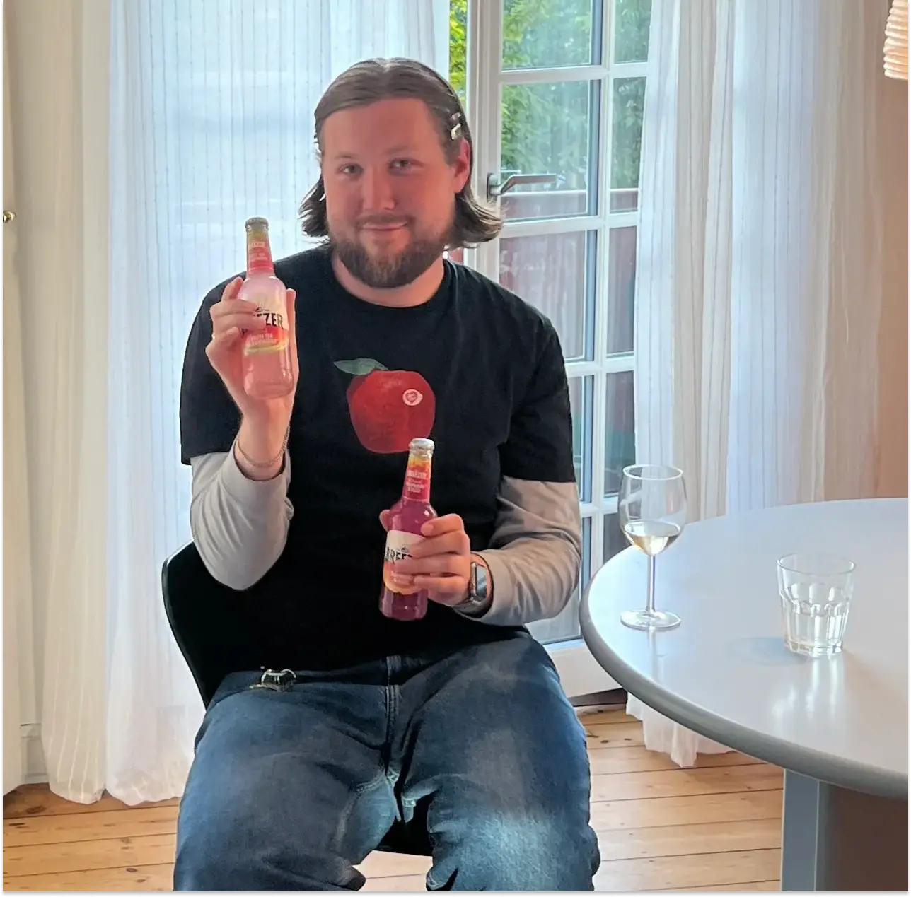

Tema 03
 

I Tema 03 arbejdede jeg med ideudvikling og design-research ved brug af Figma, hvor jeg lavede
moodboards, wireframes,
styletiles og prototyper. Jeg udførte både 5-sekunders og tænke-højt tests for at indsamle feedback og
forbedre
designet. En vigtig del af processen var at optimere websitet gennem Lighthouse-testen, som hjalp med at
forbedre
performance, blandt andet ved at konvertere billeder til WEBP-format.
Moodboards blev brugt til at definere stemningen og visuelle retning for websitet, mens styletiles hjalp
mig med at
sikre konsistens i farver, skrifttyper og knapper.
Temaet gav mig en dybere forståelse af, hvordan UX-metoder og brugerfeedback kan forme et designs
resultater. Jeg lærte,
hvordan man baserer designbeslutninger på konkrete tests frem for at stole på mavefornemmelsen.